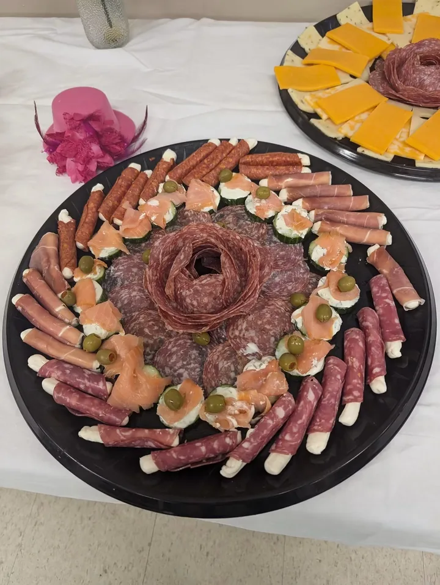
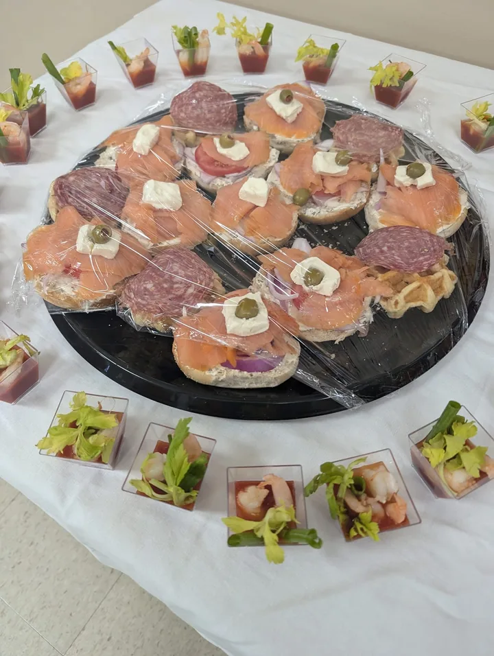
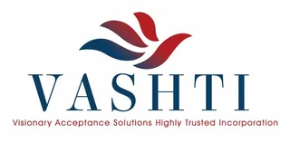
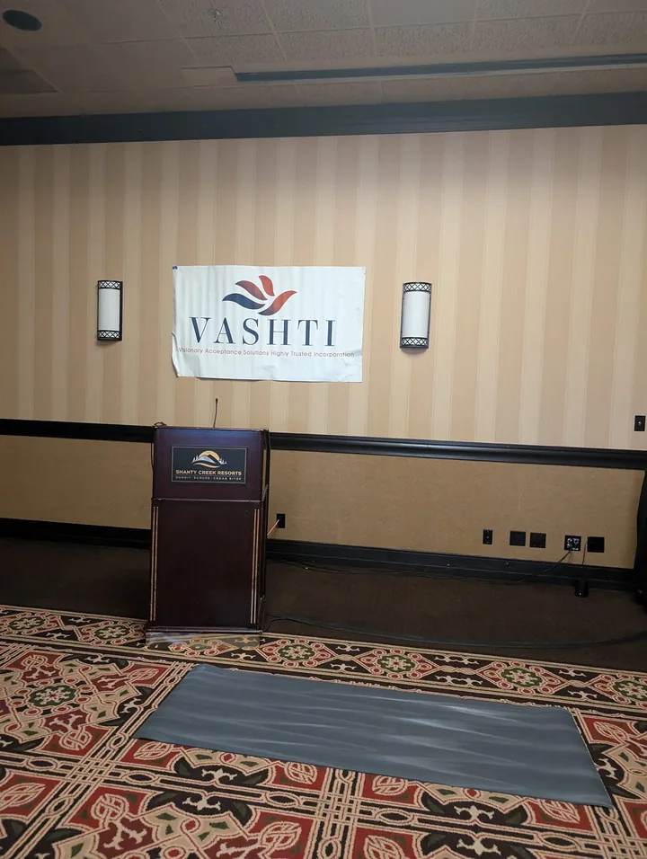
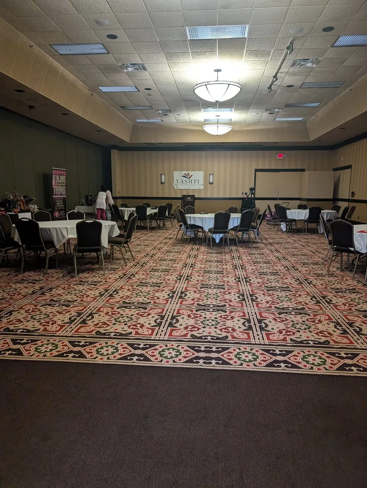

Sweeties Catering
Food prepared with care and presented for people to gather.
“I am so proud of myself for getting out and doing the things I have been planning to do.”
Client reflection


The person behind the work
Monique Foster connects leadership, coaching, faith, and community work around one idea: people can move forward when the next step becomes clear.

Founder · Coach · Author
Monique brings formal leadership education and life-coach training to work rooted in listening, truth, and action. Her Christian faith informs her commitment to service while every client is met with practical, plainspoken support.

Published work
A real record of Monique’s reflective, faith-informed work—shown alongside the materials she uses to build and share Visions.
Connected work
Food prepared with care and presented for people to gather.
“I am so proud of myself for getting out and doing the things I have been planning to do.”
Client reflection



Community programs created for honest conversation, learning, and connection.
Visit VASHTI

Travel planning and hosted experiences that make room for rest, discovery, and shared perspective.
Explore travel servicesStart with what is real